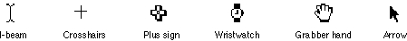
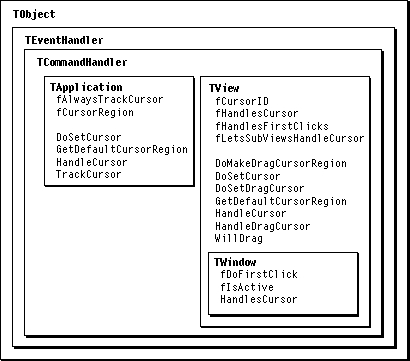

Legacy Document
Important: The information in this document is obsolete and should not be used for new development.
Important: The information in this document is obsolete and should not be used for new development.


Overview
MacApp provides support to help your application
Whenever the user moves the mouse, MacApp determines whether the cursor image is over the content area of an application window. If it is, the window object and the views in the window's content area are given the opportunity to track the cursor and to change the cursor image.
- change the cursor image for a view or change the image whenever the cursor is over an object in your view
- show an animated watch cursor during completion of a long task
- show the grabber hand or arrow cursor when a mouse-down action is initiating a drag operation, or show a drag cursor specified by your application
Figure 21-1 shows some commonly used cursor images. The I-beam cursor is typically used as a text insertion point, the crosshairs cursor for drawing, the plus sign for selecting or dragging, the wristwatch to show that the application is busy, the grabber hand for dragging, and the arrow for clicking, selecting, or dragging.
Figure 21-1 Commonly used cursor images

MacApp's Cursor-Handling Support
Some important MacApp classes, methods, and fields for working with the cursor are show in Figure 21-2.Figure 21-2 Classes, methods, and fields for working with the cursor

Cursor handling starts with the application object, which uses the
fCursorRegionfield to specify a region for which the current cursor image is valid. When the application receives a mouse-moved event that occurred outside the current cursor region, it invalidates the cursor region. The application'sMainEventLoopmethod sets in motion a series of actions that cause the cursor region to be checked regularly and recomputed when necessary.An application, window, view, or behavior object can handle the cursor by setting the cursor image and computing a region for which that image is valid. If no other object handles the cursor, the application object sets the cursor to the arrow cursor.
Application Fields and Methods
These fields and methods ofTApplicationare used in cursor handling:
fAlwaysTrackCursor- When the
fAlwaysTrackCursorfield has the valueTRUE, MacApp ignores the current cursor region and always tracks the cursor; otherwise, it only tracks the cursor when the cursor moves outside the current cursor region. The default value isFALSE.fCursorRegionThe fCursorRegion field specifiesthe area in which the current cursor image is valid.DoSetCursor- The
DoSetCursormethod callsGetDefaultCursorRegion, then calls the Toolbox routineSetCursorto set the cursor image to the arrow cursor.GetDefaultCursorRegion- The
GetDefaultCursorRegionmethod computes the cursor region for the case when no window has handled the cursor. It starts with the desktop region, then subtracts the cursor region of any window that handles the cursor.HandleCursor- The
HandleCursormethod looks for a window that contains the mouse and can handle the cursor. If it finds one, it calls the window object'sHandleCursormethod, then adjusts the cursor region.TrackCursor- The
TrackCursormethod callsHandleCursorto give the application's windows and views a chance to handle the cursor. If none does, it callsDoSetCursor.View Fields and Methods
These fields and methods ofTVieware used in cursor handling:
fCursorID- The
fCursorIDfield stores a resource ID number for a cursor resource. The default value iskNoResource(indicating the arrow cursor should be displayed).fHandlesCursor- When the
fHandlesCursorfield has the valueTRUE, the view can handle the cursor; otherwise, it can't. The default value isTRUE.fHandlesFirstClicks- When the
fHandlesFirstClicksfield has the valueTRUE, the view responds to a first click in the view; otherwise, it doesn't. The default value isTRUE. (See alsofDoFirstClickin "Window Fields and Methods" on page 488. If, for example, you want a user to be able start drawing in a window that isn't the frontmost window by clicking in that window and dragging, you setfDoFirstClicktoTRUEfor the window and setfHandlesFirstClickstoTRUEfor the view that handles the drawing.)fLetsSubViewsHandleCursor- When the
fLetsSubViewsHandleCursorfield has the valueTRUE, the view lets its subviews handle the cursor; otherwise, it doesn't. The default value isTRUE.DoMakeDragCursorRegion- The
DoMakeDragCursorRegionmethod creates and returns a region, in local coordinates, that can be used to test whether the mouse is in a location that would initiate a drag operation (and over which the cursor image should be set to a drag cursor).DoSetCursor- The
DoSetCursormethod first callsDoSetDragCursor. IfDoSetDragCursordoesn't set the cursor, thenDoSetCursorusesfCursorIDto retrieve a cursor resource. (IffCursorIDis set tokNoResource, it uses the arrow cursor.)DoSetCursorcalls the Toolbox routineSetCursorto set the cursor image.DoSetDragCursor- The
DoSetDragCursormethod determines whether a mouse click would initiate a drag operation. If so, it sets the cursor to the open-hand cursor; if not, it does nothing. (See "Setting the Drag Cursor" on page 257.)GetDefaultCursorRegion- The
GetDefaultCursorRegionmethod computes the largest possible cursor region. It starts with the view's extent, then subtracts the region of any subview that handles the cursor.HandleCursor- If the
fLetsSubViewsHandleCursorfield has the valueTRUE,HandleCursorlooks for a subview that contains the mouse and handles the cursor. If no subview handles the cursor, it lets behaviors have a chance. If no subview or behavior handles the cursor, it callsDoSetCursor.HandleDragCursor- If a subview contains the mouse, allows dragging, and has subviews of its own, the
HandleDragCursormethod calls the subview'sHandleDragCursormethod. If no such subview handles the drag cursor, but the current view does have at least one subview,HandleDragCursorcomputes a cursor region that contains the extent of all subviews that allow dragging. Finally,HandleDragCursorcallsDoSetDragCursor. IfDoSetDragCursordoesn't return a cursor region,HandleDragCursorsets the cursor region to the one it computed and sets the cursor to the arrow cursor.WillDrag- The
WillDragmethod is passed the cursor region computed byDoMakeDragCursorRegion. It determines whether the view contains draggable data and whether the cursor is currently in a location that would initiate a drag.Window Fields and Methods
These fields and methods ofTWindoware used in cursor handling:
fDoFirstClick- When the
fDoFirstClickfield has the valueTRUE, a mouse-down event in this window activates the window and is passed on to the content region; otherwise, a mouse-down event only activates the window. The default value isFALSE. (See also "Floating Windows," beginning on page 448.)fIsActive- When the
fIsActivefield has the valueTRUE, this window is active; otherwise, it is not active.HandlesCursor- The
HandlesCursormethod returnsTRUEiffHandlesCursorisTRUEand the window is active, or iffDoFirstClickisTRUE.Setting the Cursor Image for a View
You can associate a cursor image with each of your views by specifying a cursor ID in your view resource and setting thefHandlesCursorfield toTRUE. When a user moves the cursor over a view, MacApp calls the view'sDoSetCursormethod. If no drag operation is involved, MacApp automatically sets the cursor image according to the view'sfCursorIDfield. IffCursorIDis set tokNoResource, the arrow cursor is shown.To change the view's cursor image as the mouse moves within a view, you override the
DoSetCursormethod, as described in "Recipe--Setting the Cursor Image Over a View" on page 491.For information on setting the cursor for a drag operation, see Chapter 9, "Drag and Drop," and Chapter 28, "Working With Drag and Drop."
Color Cursors
MacApp's default cursor handling for view and window objects is not set up to handle color cursor resources. Unless you modify MacApp's behavior, the ID specified in thefCursorIDfield must refer to a standard cursor of type'CURS'. To work with a color cursor (resource type'crsr'), you use the Toolbox routineGetCCursorto get the cursor, and the routineSetCCursorto set it. For more information, see "Recipe--Displaying a Color Cursor" on page 495.